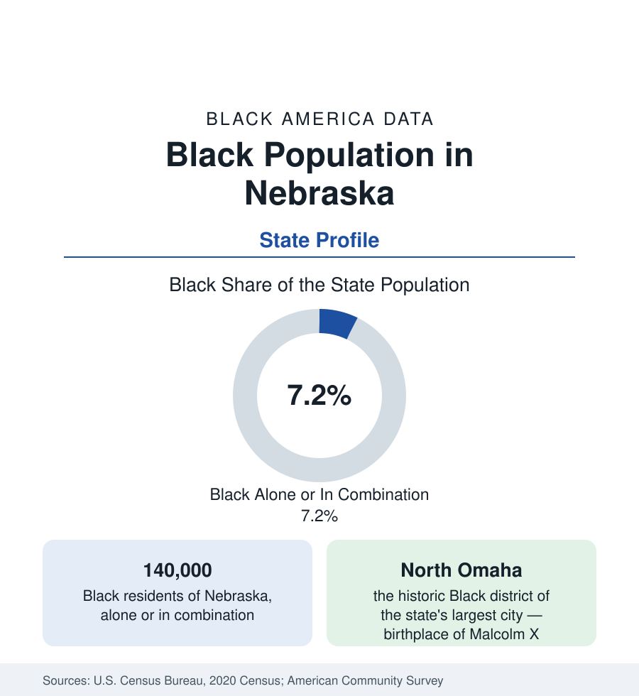

Black Census
Black Population in Nebraska: North Omaha's State
About 140,000 Black Nebraskans — one in fourteen residents — with nearly two-thirds in Omaha and one famous North Side. The census profile.

Nebraska holds about 140,000 Black residents — Black alone or in combination — roughly one in fourteen of its people, with Black alone at about 96,000, or 4.9 percent. Nearly two-thirds live in Omaha, and within Omaha, the community's historic center — North Omaha — is one of the most storied Black districts of the plains: a railroad and meatpacking community that produced Malcolm X (born in Omaha in 1925) and a jazz scene of regional fame. This article profiles the population in the census data.
North Omaha and the Packinghouse Economy
Omaha's Black community was built by the railroads (the Union Pacific's headquarters city) and the stockyards and packinghouses of South Omaha, which drew Black workers from the South from the First World War era onward. Confined by covenant to the Near North Side, the community built along North 24th Street a complete district — churches, the Dreamland Ballroom's jazz stage, businesses, the Omaha Star (a Black newspaper publishing since 1938, among the longest-running in the nation) — whose modern successor, North Omaha, remains the city's Black center at shares reaching local majorities, ringed by the suburbs and the northwest growth. The city's Black population totals roughly 80,000 to 85,000 within the city (about an eighth of its residents), with the metro adding Bellevue (Offutt Air Force Base) and the Sarpy County suburbs; the 1919 lynching of Will Brown and the courthouse riot are the district's documented trauma in the historical record, and the community's rebuilding after them is its founding modern story.
Lincoln and the Small-City Layer
Lincoln, the capital and university city, holds the second community — roughly 13,000 to 15,000 Black residents, about a twentieth of the city — shaped by the University of Nebraska and state government. Beyond the two metros, the population follows the packing industry to its modern plants: Grand Island, Lexington, Schuyler, and the other meatpacking towns of the Platte corridor record small but growing Black and African populations (with Latino and refugee communities layered larger beside them), while the farm counties of the plains record Black shares under 1 percent nearly everywhere — among the emptiest maps in this reference, against which the two metros' concentration reads the more starkly.
Composition and Indicators
Nebraska's Black indicators present the plains pattern with one sharp internal divide: the state's overall Black medians (income, attainment through the university system, homeownership in the smaller cities) sit mid-pack for the region, while North Omaha's tracts record concentrated indicators at the difficult end of any table in this reference — the metro's intra-city spread is the state's defining data fact. The composition layers a rooted native-born base (the packinghouse generations) with one of the interior's notable African refugee communities — Omaha is a significant resettlement center, its Sudanese and East African populations among the largest per capita in the nation — whose second generation is now moving through the city's schools. The state has no HBCU.
Change and the Estimates
The estimates show steady growth — Omaha's suburbs and the packing towns gaining, the farm counties' small bases shrinking — at rates above the state's overall growth, slowly lifting the Black share census by census in the pattern of the other plains states. The meatpacking workforce's data (the industry's essential-worker exposure in the pandemic files appears in the employment data) and the refugee communities' maturation are the profile's moving parts.
Reading the Nebraska Numbers
Malcolm X and the North Side's Record
North Omaha's place in the national record is secured by its most famous son: Malcolm Little, born in Omaha in 1925, whose family's home (marked today by the Malcolm X Memorial Foundation's site on Evans Street) stood in the district before the family's flight from the era's racial violence — the autobiography's opening chapter is an Omaha document. The district's institutional record matches the fame: the Great Plains Black History Museum, the restored Jewell Building and Dreamland's site, and the Star's continuous publication make North Omaha one of the best-documented small Black communities in America — an archive density that lets its census story be told, unusually, with the receipts attached.
Nebraska is a one-district state in Black America's data: North Omaha's story — the Star's eight decades, the Dreamland's stage, a native son named Malcolm Little — is the profile, and the 140,000 in the tables are its people, two-thirds of them within a few miles of North 24th Street.
More in Black Census
The Black Population of the United States: Size, Definitions, and Distribution
The Black population of the United States totals 52.8 million — 15.4 percent of the nation. How the Census Bureau defines and counts the population, and where it lives.
Black Median Household Income in the United States
Black median household income stands at $56,490 in the Census Bureau's annual income report — how the figure is measured, how it compares, and what drives it.
The Black Poverty Rate: Levels, Children, and the Long Trend
The official Black poverty rate is 17.1 percent — against 11.1 percent nationally and 7.7 percent for non-Hispanic White Americans. How poverty is measured and what the data show.
Source: U.S. Census Bureau, 2020 Census; American Community Survey; Population Estimates Program.